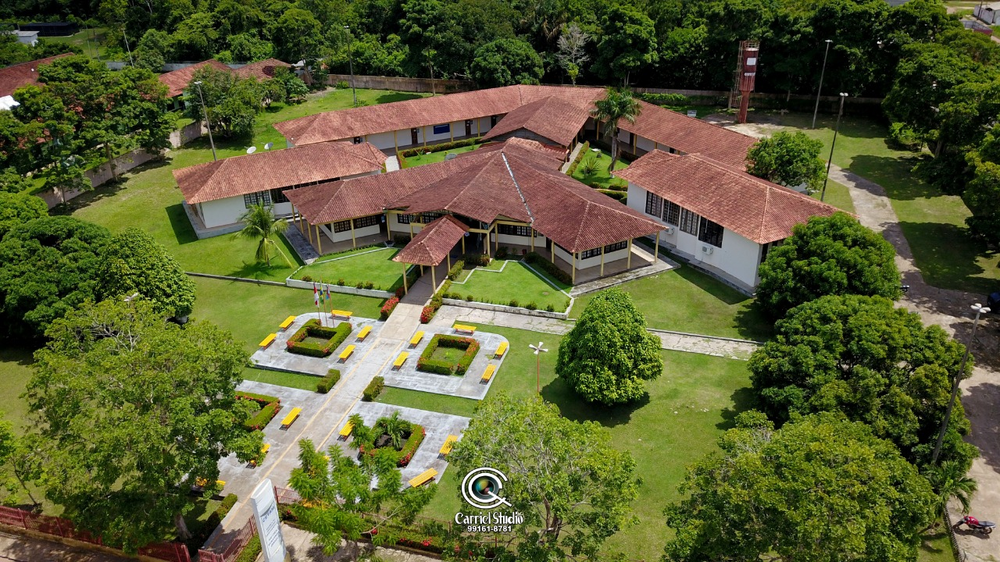

Moysés Banarrós Israel

Moysés Benarrós Israel nasceu em 10 de fevereiro de 1924, na cidade de Belém,
no estado do Pará. Filho de Salomão Benarrós Israel e Carlota Benayon Israel,
cresceu em um ambiente familiar marcado por valores de trabalho e dedicação, e desde cedo,
demonstrou um espírito empreendedor e uma determinação marcante, qualidades que moldaram
sua trajetória pessoal e profissional. Ainda jovem, Moysés mudou-se para Manaus,
onde deu início à sua trajetória profissional ao lado de seu tio, Isaac Sabbá,
um dos grandes visionários da economia regional.
Por: Rebeca Xavier
Ler mais

A Memorália Moysés Benarrós Israel é um espaço cultural criado em homenagem ao empresário
e filantropo que teve um papel crucial no desenvolvimento educacional de Itacoatiara, Amazonas.
Na década de 1990, Moysés doou um terreno de 18.145,62 metros quadrados para a Universidade
Federal do Amazonas (UFAM), viabilizando a instalação de um campus permanente na cidade.
Hoje, esse campus abriga nove cursos de graduação e um programa de mestrado,
sendo uma referência em educação superior para a região e um marco para o progresso local.
Por: Rebeca Xavier
Ler mais

A doação de uma área significativa por Moysés Benarrós Israel foi um marco no desenvolvimento
educacional de Itacoatiara e no fortalecimento do ensino superior no interior do Amazonas.
Na década de 1990, o empresário, conhecido por seu comprometimento com o progresso social e
educacional, destinou o terreno que possibilitou a implantação do Centro de Estudos Superiores
da Universidade do Estado do Amazonas (UEA) na cidade. Essa contribuição visionária transformou
o acesso ao ensino superior para os moradores da região e dos municípios vizinhos.
Por: Rebeca Xavier
Ler mais

A educação profissional em Itacoatiara deu um salto significativo com a inauguração da Escola de Educação
Profissional Moysés Benarrós Israel, uma unidade do Centro de Educação Tecnológica do Amazonas (CETAM),
no dia 27 de setembro de 2008. A concretização desse projeto só foi possível graças à generosa doação de
um terreno feita por Moysés Benarrós Israel, empresário e filantropo que sempre
declarou compromisso profundo com o progresso social e educacional no estado do Amazonas.
Por: Rebeca Xavier
Ler mais

A Obra Social Chico Xavier é um importante pilar de apoio social em Itacoatiara,
Amazonas, e suas contribuições foram possíveis graças à generosa doação de um terreno
por Moysés Benarrós Israel, em meados de 2001. Esse espaço se tornou o ponto central
das atividades sociais promovidas pelo Centro Espírita Maria Dolores (CEMAD), que realiza
um trabalho dedicado à comunidade local desde 1998. A contribuição de Moysés Israel garantiu
à instituição um local permanente para expandir suas ações e beneficiária de inúmeras famílias.
Por: Rebeca Xavier
Ler mais